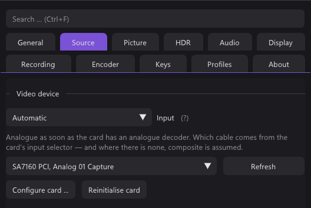
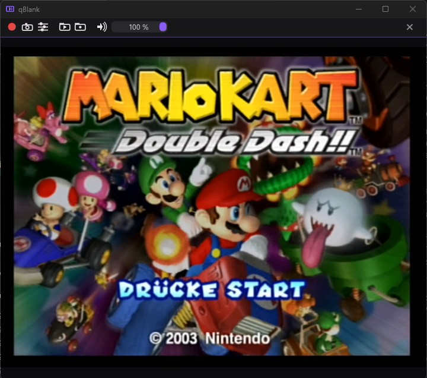
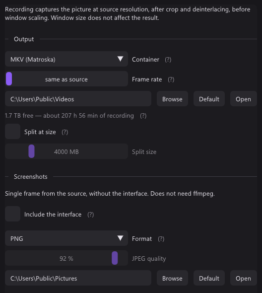
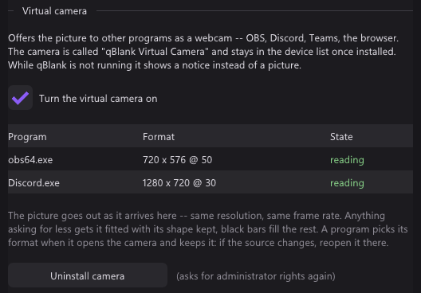
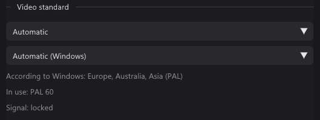
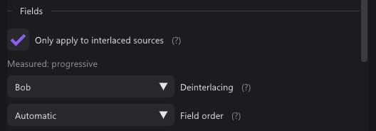
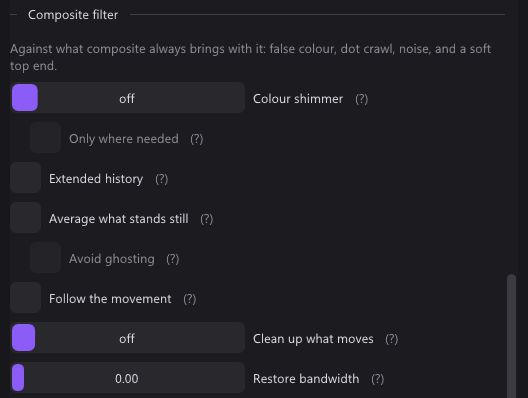
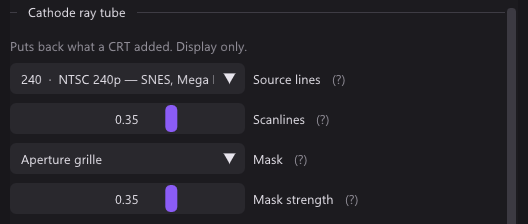
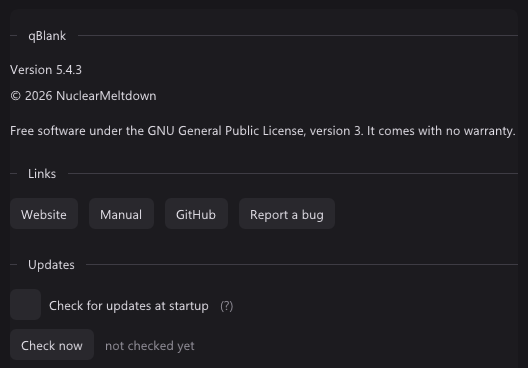

Install
qBlank is one file. Download qBlank.exe from the latest release and put it in a folder of its own that you can write to — its settings are kept beside it in qBlank.json. There is no installer and nothing goes into the registry, except the virtual camera if you install it.
- Windows 10 or later and a DirectShow capture device: almost any card, USB ones included.
- If SmartScreen warns about an unknown publisher, choose More info, then Run anyway.
- The release also carries
CapView.exe. It is only for moving an old CapView install over; new users need justqBlank.exe. - To remove qBlank, delete its folder. Uninstall the virtual camera first if you installed it.
First start
The first start shows a welcome screen that names the key for the settings, F2. From then on, qBlank opens the settings by itself as long as no device is picked.
- Source → Video device: pick your card. The picture appears at once.
- Source → Card input: only on cards with several inputs, such as HDMI and composite.
- Source → Source audio: the card's own audio, or any Windows recording device.
- Source → Format: leave it on automatic unless you want a particular resolution or frame rate.

Only one program can hold a card at a time. If the picture stays black, close OBS or any other program that uses the card.
The window
- Double-click or Enter toggles fullscreen, Esc leaves it. Ctrl+Enter toggles borderless.
- Right click opens the menu: settings, fullscreen, window size (1×, 2×, 3× the source), always on top, borderless, statistics, toolbar, video standard, colour, mute, profile, recording, screenshots, freeze and compare filters.
- Mouse wheel changes the volume.
- Hold Shift while resizing to keep the shape of the picture.
- In a borderless window, drag the picture to move the window. Snap and the taskbar button stay.
- F1 shows the statistics: source format, measured frame rate and the time a frame spends inside qBlank.

Keys
These are the defaults. All of them can be changed in Settings → Keys.
| Key | Action |
|---|---|
| Enter | Fullscreen |
| Ctrl+Enter | Borderless |
| F1 | Statistics |
| F2 | Settings |
| F3 | Toolbar |
| F5 | Restart capture |
| Shift+F5 | Reinitialise card |
| F6 | Measure the colour range again |
| F7 | Detect the video standard |
| F8 | Detect the border |
| F9 | Start/stop recording |
| F10 | Screenshot |
| Ctrl+F10 | Screenshot to clipboard |
| F11 | Freeze |
| F12 | Compare filters |
| Shift+F12 | All filters off |
| M | Mute |
| + / - | Volume up / down |
Fixed keys: Esc leaves fullscreen or closes the settings, Ctrl+1…9 switches profile, Ctrl+F searches the settings.
Settings
Every change applies on the next frame. Ctrl+F finds any setting, also under the names other programs use. A right click on a slider puts it back to its default. Tabs that need a device only appear once one is picked, and controls that do not apply to the source are hidden.
| Tab | What is in it |
|---|---|
| General | Language, window, appearance, notification area icon, Start menu and desktop shortcuts, log file |
| Source | Video device, video standard, card input, source audio, format |
| Picture | Scaling, picture controls, fields (deinterlacing), crop, native pixel grid, composite filter or noise, cathode ray tube, compare, colour |
| HDR | High dynamic range: tone mapping or passthrough, and what keeps the range in screenshots and recordings |
| Audio | Playback device, delay, volume, microphone |
| Display | Graphics (Direct3D 11 or Vulkan), VSync and behaviour, volume readout, fullscreen |
| Recording | Output folder and format, screenshots, virtual camera, rewrap to MP4 |
| Encoder | Encoder, ffmpeg, encoder settings |
| Keys | Every key above, rebindable, with Reset all |
| Profiles | Profiles and choosing them automatically |
| About | Version, copyright, licence, links and the update check |
The settings window runs on its own graphics device, so it can sit on a second monitor while you play on the first.
Recording, screenshots, virtual camera
Recording
- Recording needs ffmpeg. Encoder → Download ffmpeg fetches it and keeps it current.
- Pick the encoder in the Encoder tab: NVENC, Quick Sync, AMF, x264 or x265, with H.264, H.265 or AV1.
- F9 starts and stops. A red dot on the taskbar button shows that it is recording.
- The Recording tab shows the free space as recording time. A recording stops itself before the drive is full.
- A microphone can go on a track of its own: Audio → Microphone.
- Rewrap to MP4 turns finished recordings into MP4 without encoding them again.
Screenshots
- F10 saves at source resolution, Ctrl+F10 copies to the clipboard.
- PNG, JPEG and JPEG XR need nothing else. AVIF needs ffmpeg.
- Include the interface in the Recording tab grabs the finished window instead.

Virtual camera
Recording → Virtual camera → Install camera asks once for administrator rights. After that, OBS, Discord or a browser can pick qBlank as a camera. Uninstall it there too.

Analogue consoles
Video standard
Source → Video standard on Automatic finds PAL, NTSC or SECAM by itself and follows a console switched between 50 and 60 Hz. Leave alone keeps what the card's driver set. If the colour is wrong, press F7: it checks again on the current picture and tells you what it found.

Deinterlacing
Picture → Fields. With Only apply to interlaced sources on, the deinterlacer only runs when the picture is measured as interlaced, so it can stay on for 240p consoles.

| Mode | What it does |
|---|---|
| Off (weave) | Fields stay woven. Combing on motion. |
| Bob | Ideal for 240p/288p, the least steady for real interlacing. |
| Bob (interpolated) | Like Bob, missing lines interpolated. Much steadier. |
| Motion adaptive | Still parts keep every line, moving parts are interpolated. |
| Edge directed | For pixel art: smooth diagonals. Weaker on composite. |
| YADIF | Best quality, a little more GPU load. |
If the picture jumps up and down, switch Field order.
Pixel art
Picture → Native pixel grid → Source width: how many pixels the console draws across, 256 for a SNES. qBlank then draws every console pixel as one sharp block.
Left on not specified, qBlank checks analogue sources by itself. If the picture looks like pixel art, a notice offers the width: Set takes it, Show me opens the setting without changing it, Ignore hides it until the next start.
Composite filter
Picture → Composite filter only appears for a composite input.
- Extended history removes dot crawl also where something moves or fades. Off by default.
- Average what stands still cancels dot crawl in still parts of the picture, at no cost.
- Clean up what moves covers moving parts too, for a little sharpness.
- Colour shimmer calms rainbow patterns over fine detail.
- Restore bandwidth brings back detail the cable softened.

F12 splits the picture, filters off on one side and on on the other. F11 holds the picture still while you compare.
Colour range
Picture → Colour measures full or limited range from the picture. If blacks look grey or crushed after changing an option in the card's driver, press F6.
Cathode ray tube
Picture → Cathode ray tube adds scanlines and a mask, for the display only. Set Source lines to what the console draws: 240 or 288 for SNES, Mega Drive, PS1, N64; 480 or 576 for GameCube, PS2, Dreamcast, Wii. Scanlines need a window at least twice the source height.



Profiles
A profile keeps device, input, format and every picture and audio setting — one per console or source. Switch with Ctrl+1…9 or from the right-click menu. Under Profiles → Choose automatically, a profile can be tied to a video standard and is then picked when that standard is found.
About and updates
About has the version, licence and links to the website, this manual, GitHub and the bug tracker. Below them, under Updates, qBlank checks at startup if you let it, or on Check now. Download and install replaces the program; your settings stay.

Troubleshooting
| Problem | Try |
|---|---|
| Black picture | Close other programs using the card. F5 restarts the capture, Shift+F5 reinitialises the card. Check the card input. |
| No colour, or wrong colour | Video standard on Automatic, then F7. |
| Grey or crushed blacks | F6, or set the range in Picture → Colour. |
| Combing on movement | Turn on deinterlacing in Picture → Fields. |
| Picture jumps up and down | Switch the field order. |
| No sound | Check Source → Source audio and the playback device in Audio. M may have muted it. |
| Sound out of step | Audio → Delay. |
| Is a filter the problem? | Shift+F12 shows the signal as it arrives. |
| Something else | Turn on the log in General → Other and report the bug with it. |
To start over with default settings, close qBlank and rename or delete qBlank.json beside the program.